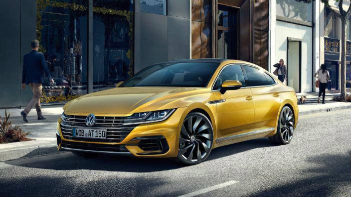
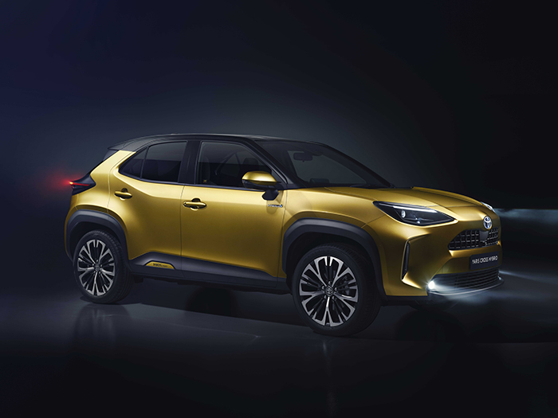
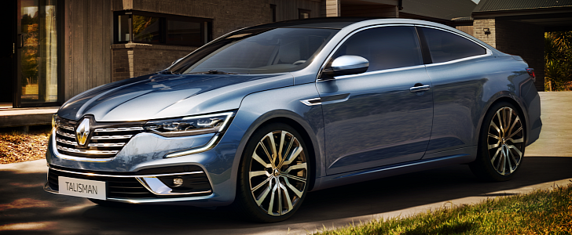
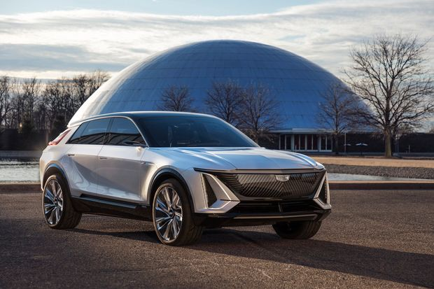
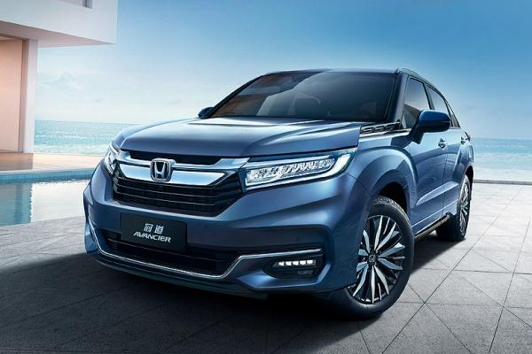
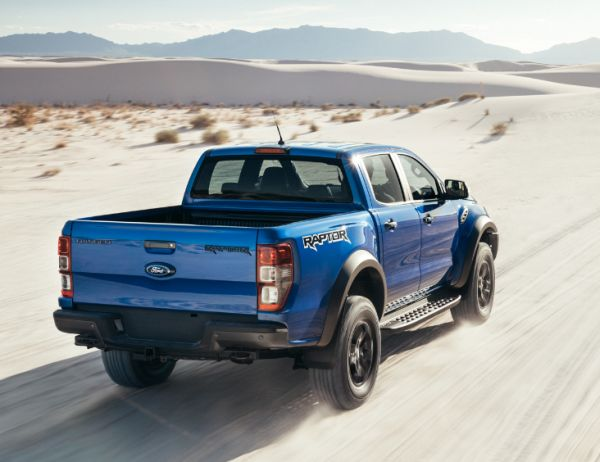
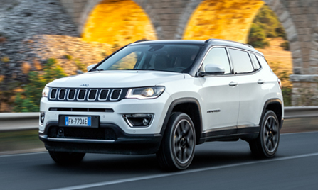
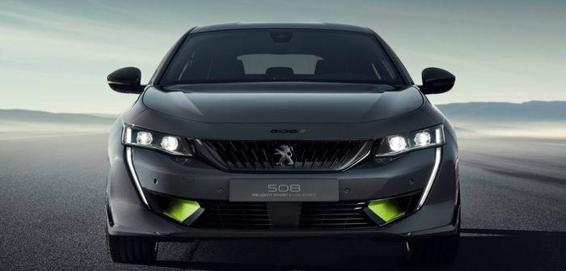
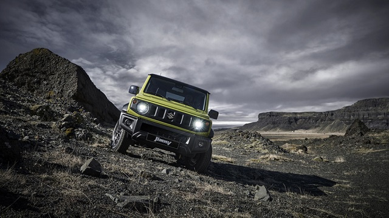

Industria automobilistică este o gamă largă de companii și organizații implicate în proiectarea, dezvoltarea, producerea și comercializarea autovehiculelor. Este unul din cele mai importante sectoare economice după venit. Industria automobilistică nu include industriile dedicate întreținerii automobilelor după livrarea lor la utilizatorul final, cum ar fi atelierele de reparații auto și stațiile de alimentare cu carburanți.
Anterior, pe pagina Acasă, au fost prezentate o mică parte din prodcătorii de automobile în funcție de numărul mașinilor construite. Așadar mai jos se observă un grafic al producătorilor după țară:
China 19.271.808
SUA 10.328.884
Japonia 9.942.711
Germania 5.649.269
Korea 4.557.738
India 4.145.194
Brazilia 3.342.617
Mexic 3.001.974
Pentru o bună economie, producătorii au creat grupuri unde există mai mulți producatori. Așadar, mașinile construite ale unui grup conțin aceiași platformă, dar in funcție de producător respectiva mașina are un anumit design. Mai jos, este un clasement al grupurilor celor mai importante pe plan mondial.

1.VAG își reconfirmă poziția de lider mondial. Gigantul care are în portofoliul nu mai puțin de 11 mărci de automobile și vehicule grele (Volkswagen, Audi, Skoda, SEAT, Volkswagen comerciale, Porsche, Bentley, Lamborghini, Bugatti, MAN, Scania), plus celebrul brand moto Ducati, a stabilit un nou record în 2019, cu 10,97 milioane de unități vândute, față de 10,83 în 2018 (+1,3%). Principalele sale piețe rămân Europa (41%) și China (37%), iar cele mai vândute 10 modele au fost anul trecut, în această ordine, Volkswagen Tiguan, Volkswagen Golf, Volkswagen Polo, Volkswagen Lavida, Volkswagen Passat, Skoda Octavia, Volkswagen T-Roc, Volkswagen Bora, Audi A4 și Volkswagen Jetta. Iată și un interesant Top 5 al mărcilor care realizează cele mai mari volume ale grupului: 1. Volkswagen 6.278.300 (+0,5%), 2. Audi 1.845.600 (+1,8%), 3. Skoda 1.242.800 (-0,9%), 4. SEAT 574.100 (+10,9%), 5. Porsche : 280.800 (+9,6%).

2.Toyota a revenit pe locul secund, după ce, anul trecut, pierduse această poziție în favoarea Alianței Renault-Nissan. Ce-i drept, revenirea a fost favorizată și de reculul înregistrat anul trecut de Renault-Nissan. Oricum, este un rezultat excepțional, mai ales dacă ținem cont de faptul că grupul nipon are în portofoliu doar trei mărci de automobile (Toyota, Daihatsu, Lexus) și una de camioane (Hino). Cu 10,74 milioane de unități vândute, creșterea a fost de 1,4%. De remarcat că Toyota realizează 83% din vânzările grupului, cu 8,95 milioane de unități. Repartizarea pe piețe arată astfel: SUA 22%, Japonia 22%, China 13%, Europa 10%. Corolla este cel mai vândut model de automobil pe plan mondial. Rezultate bune au înregistrat și RAV4, Camry, Hi-Lux, Yaris, Highlander și C-HR.

3. Alianța Renault-Nissan-Mitsubishi a retrogradat pe poziția a treia, după ce producția anuală a scăzut cu 5,4% în 2019, până la 10,18 milioane de vehicule, însumând 12 mărci: Nissan, Datsun, Infiniti, Venucia, Renault, Lada, Dacia, Samsung Motors, Alpine, Jinbei, Huasong și Mitsubishi. Cu 3,75 milioane de vehicule, Grupul Renault deține 37% din totalul alianței., dar Nissan Group a realizat cea mai mare ”felie” de producție, cu 5,18 milioane de unități, însă a și înregistrat cea mai mare scădere față de 2018, cu -8,3%. Mitsubishi a contabilizat doar 1,25 milioane de vehicule (+0,5%). De remarcat evoluția pozitivă a mărcii Dacia, care a totalizat anul trecut 736.570 de unități produse, în creștere cu 5,1%. La nivel mondial, repartiția pe piețe majore se prezintă astfel: Europa 27%, China 15%, SUA 15%, Japonia 6%. Cele mai vândute modele sunt, în această ordine, Nissan Qashqai, Nissan Sylphy, Nissan Rogue, Nissan X-Trail și Renault Clio.

4. General Motors a reușit să se mențină pe aceeași poziție ca și în 2018, însă și-a continuat degringolada cu care ne-a obișnuit deja de câțiva ani. Fostul lider mondial a reușit, prin cele șase mărci principale (Chevrolet, Buick, Wuling, GMC, Baojun și Cadillac) să vândă 7,47 milioane de unități în 2019, cu 10,9% mai puțin față de anul precedent. O scădere comparabilă cu cea din 2018, după vânzarea Opel către PSA. De această dată, cea mai mare scădere s-a înregistrat în China, cu -27% și 770.000 de unități mai puțin. Chevrolet a fost brandul cu cel mai mare volum (3,65 milioane de vehicule), în timp ce China este principala piață (43%), urmată de SUA (38%).

5. Hyundai-Kia încheie Top 5 mondial al giganților auto și realizează această performanță cu doar trei mărci: Hyundai, Kia și Genesis. Vânzările au scăzut anul trecut cu 2,8%, până la 7,19 milioane de unități, cea mai mare scădere (circa 170.000) fiind în China. Hyundai a contabilizat 4,42 milioane, iar Kia 2,77. SUA este principala piață, cu 18,5% din total, iar cele mai vândute modele sunt Hyundai Tucson, Kia Sportage și Hyndai Elantra.

6. Honda a făcut rocadă cu Ford și a urcat o poziție, chiar dacă vânzările au scăzut cu 2%, până la 5,15 milioane de unități. Honda a totalizat 4,96 milioane de automobile vândute, în timp ce Acura, cealaltă marcă a grupului, a produs puțin sub 200.000 de unități. Honda a scăzut pe plan global, însă a reușit să limiteze această tendință grație creșterii cu 10% din China. SUA (31,2%) și China (30,8%) sunt principalele piețe, în timp ce Europa a reprezentat doar 2,5% din totalul vânzărilor Honda în 2019. Civic continuă să fie cel mai bine vândut model.

7. Ford, unul din liderii industriei auto din trecut, a retrogradat (încă) o poziție, iar dacă fuziunea PSA - FCA se va concretiza, căderea nu se va opri aici. Ford a fost cândva numărul 2 mondial, deținând în acea perioadă mărci de prestigiu, precum Aston Martin, Jaguar, Land Rover, Volvo și parțial Mazda. Acum, alături de Ford a mai rămas doar Lincoln, iar vânzările mondiale au scăzut cu 8,8%, după ce, în 2018, înregistrase -15%! Scăderile s-au consemnat pe toate piețele, începând cu un usturător -38,5% în China. Principalele piețe sunt SUA (47%) și Europa (26%). De remarcat, totuși, performanța pickup-ului F, al doilea în topul celor mai vândute modele de automobile din lume.

8. FCA este un alt gigant auto (deține nu mai puțin de 8 mărci: FIAT, Alfa Romeo, Lancia, Maserati, Jeep, Chrysler, Dodge, Ram), care se află în regres. Anul trecut, vânzările grupului italo-american au scăzut cu 8,7%, până la 4,42 milioane de unități. ”Partea americană” a vândut dublu în comparație cu ”partea italiană”, în condițiile în care, la momentul asocierii, vânzările erau aproximativ egale. Va fi interesant de urmărit dacă degringolada italienilor va putea fi stopată de alianța cu PSA. Principalele piețe sunt SUA (50%) și Europa (29%), iar cele mai vândute modele în 2019 au fost Ram Pick-up, Jeep Compass și Jeep Grand Cherokee.

9. PSA s-a menținut pe aceeași poziție ca și anul trecut. Cu 3,49 milioane de unități vândute, a scăzut cu 10% față de 2018. Grupul care reunește în prezent mărcile Peugeot, Citroën, DS, Opel și Vauxhall este pe punctul de a se asocia cu FCA. Principalele probleme au fost pe piețele din Iran și China, la care s-au adăugat dificultățile generate de preluarea Opel-Vauxhall de la GM. Europa rămâne principala piață pentru PSA, cu 86,8% din vânzări. Topul vânzărilor pe mărci a arătat astfel în 2019: Peugeot 1.456.463 (-8,8%), Citroën 992.825 (-5,1%), Opel-Vauxhall 977.130 (-5,9%), DS 62.512 (+17,5%).
